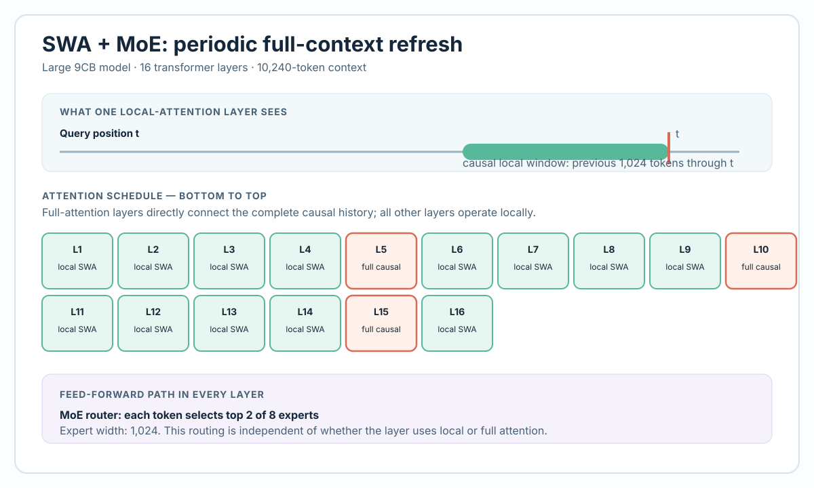
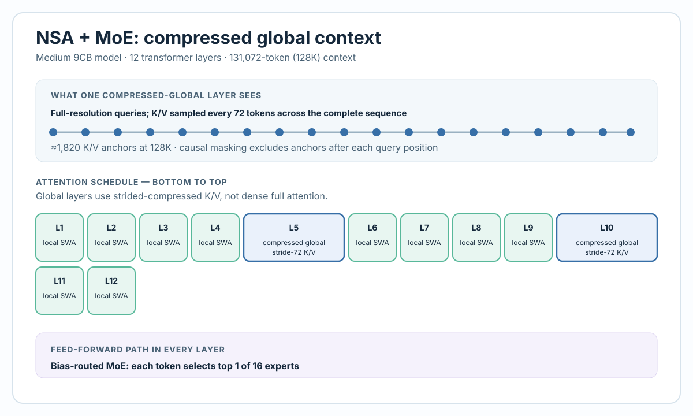
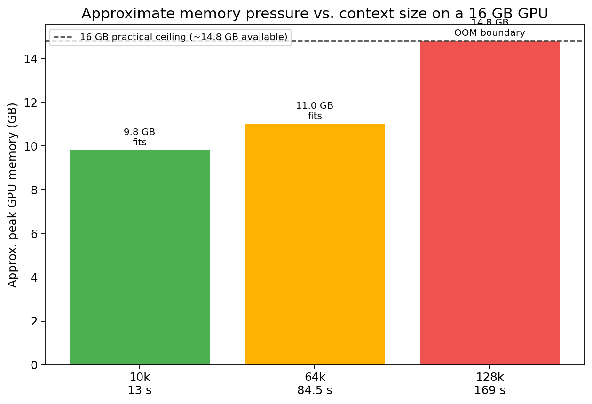

Quick Summary
We trained a series of neural language models on whale vocalizations, scaling from 8k to 128k token context windows (covering up to 2.8 minutes of audio). Across 7 major training runs, we processed 103.4 billion tokens and achieved a best perplexity of 203.2—a 97.8% reduction from the random baseline. The models learned to generate novel whale-like audio sequences, capturing temporal and spectral patterns from real underwater recordings. To make long contexts practical on modest GPU memory, the models combine local sliding-window attention with periodic global context—using compressed sparse K/V attention in the 128k variant—and mixture-of-experts routing.
Public Model Release: Three Humpback Audio Models
We are releasing three DAC 9-codebook humpback-audio checkpoints: the 9CB 10k Large v2, 9CB 32k Medium, and 9CB 128k NSA models. Each release includes a best_model.pt checkpoint and its training configuration.
| Released model | Context | Use it for | Exact resume |
|---|---|---|---|
| 9CB 10k Large v2 | 10,240 tokens | Autoregressive audio continuation, fine-tuning | ✓ step 648,000 checkpoint |
| 9CB 32k Medium | 32,768 tokens | Longer-context continuation, fine-tuning | ✓ steps 504,000 and 506,000 checkpoints |
| 9CB 128k NSA | 131,072 tokens | Long-context experimentation, fine-tuning | — best-model checkpoint only |
best_model.pt for inference or checkpoint-initialized fine-tuning. Use a checkpoint_step*.pt file only when you need to continue the original training run with its saved optimizer and scheduler state. The 128k release supports inference and fine-tuning, but not an exact training resume.
The Goal: Teaching Transformers to Speak Whale
Imagine training a language model on English text—you feed it millions of words, and it learns to predict the next word. Now imagine doing the same with whale audio, except instead of words, you have 9,219-token vocabulary of audio codes.
The challenge: whale vocalizations are structured, temporal phenomena. Unlike text (which is discrete by nature), audio is continuous. You need:
- A neural audio codec to convert waveforms → discrete tokens
- A transformer architecture that can handle long sequences
- Enough GPU memory to train on reasonable context lengths
Over 4 months, we solved all three. Here's how.
Model Architectures
We explored two main attention mechanisms, each designed to solve a specific memory constraint:
Architecture 1: SWA + MoE (Sliding Window Attention + Mixture of Experts)
Key idea: Don't attend to every token in the history. Instead, attend to:
- A local window of recent tokens (1024–2048 tokens, ~1–3 seconds of audio)
- Full attention every Nth layer (typically every 5th layer), providing long-range connectivity
Architecture 2: NSA + MoE (Native Sparse Attention + Mixture of Experts)
Inspired by: DeepSeek V4's sparse architecture
Key improvements:
- Local window of 2048 tokens (~2.6 seconds)
- Global sparse attention with ~1,820 anchor positions
- Muon optimizer for stable long-context training


Model Size Configurations
| Preset | Params | Context | Experts |
|---|---|---|---|
| Medium SWA+MoE | 205M | 8k | 8 (top-2) |
| Medium SWA+MoE (32k) | 205M | 32k | 8 (top-2) |
| Large SWA+MoE ⭐ | 479M | 10k | 8 (top-2) |
| Medium NSA+MoE (historical experiments) | 375M | 64k–128k | 16 (top-2 at 64k; top-1 at 128k) |
Training Runs: The Journey
Across 7 major training runs, we processed 103.4 billion tokens:
| Run | Context | Steps | Best Perplexity |
|---|---|---|---|
| Coarse 8k v2 | 8k | 18.5k | 32.0 |
| 9CB 8k v1 | 8k | 88.5k | 252.9 |
| 9CB 10k Large v2 ⭐ | 10k | 656k | 203.2 |
| 9CB 32k Medium | 32k | 506k | 208.5 |
| 9CB 128k NSA | 128k | 110k | 634.6 |
🔍The Best Model: 9CB 10k Large v2 ⭐
Setup: 479M parameters, 10,240 token context (~13 seconds)
Training: 656,000 steps over ~132 hours
Results:
Best perplexity: 203.2 (97.8% reduction from random)
Total tokens trained: 53.7B
128k Context: The Frontier
Motivation: 2.8 minutes (~169 seconds) of context—enough for extended whale song sequences
Training Progress:
| Steps | Val Loss | Notes |
|---|---|---|
| 10k | 6.5404 | Initial |
| 50k | 6.4756 | Steady improvement |
| 110k | 6.4572 | Plateauing—LR reduction needed |
Key observations:
- 110 consecutive eval checkpoints showed improvement (no regressions)
- Loss was clearly plateauing due to learning rate (1e-4 too high)
- CUDA OOM crash at step ~110k due to memory exhaustion
Key Findings
1. Context Length vs. Loss Trade-off
Longer context windows produce higher loss values because the prediction task is harder:
| Context | Val Loss @ 51k steps | Perplexity |
|---|---|---|
| 8k | 5.590 | 267.6 |
| 32k | 5.637 | 280.5 |
| 128k | 6.475 | 648.5 |
2. Model Size Matters
The 479M Large model achieved lower perplexity (203.2) than the 375M Medium model (208.5), despite the medium model seeing more data. This suggests the task is capacity-limited at current dataset sizes.
3. MoE Scales Efficiently
MoE + sparse routing is perfect for audio:
- Huge model capacity (8–16 experts)
- Efficient inference (only 1–2 experts activate per token)
- Training feasibility (gradients flow through fewer parameters)
4. Generation Works
All models successfully generated novel whale-like audio when sampled autoregressively. Generated samples exhibit whale-like spectro-temporal patterns with realistic temporal dynamics.

Combined prompt and generated continuation
Memory Optimization on 16GB GPU
All training was conducted on a single NVIDIA RTX 5070 Ti. Key memory-saving techniques:
| Technique | Memory Saving | Trade-off |
|---|---|---|
| Gradient checkpointing | ~30% | Slower (recompute activations) |
| 8-bit Adam | ~50% | Slightly less precise |
| Batch size 1 + grad accum 8 | ~50% | Effective batch size 8 |
| Top-1 routing (128k) | ~45% | One expert per token |
| Compressed attention (NSA) | ~95% | 1,820 anchors vs. 128k² |

Understanding Perplexity
For a vocabulary of 9,219 tokens:
- Random guessing: Perplexity = 9,219
- Our best model: Perplexity = 203.2 (97.8% reduction)
- 128k context model: Perplexity = 634.6 (93.1% reduction)
Next Steps
- Reduce learning rate on 128k: Restart from best checkpoint with LR 3e-5
- Scale dataset: Download additional SanctSound stations
- Larger models: Scale to 500M–1B parameters
- Evaluation metrics: Spectrogram similarity, bioacoustics classifier scores
- Multi-species training: Combine whale + orca + dolphin data
Technical Resources
- CAIRN Institute homepage
- Curated release code and Hugging Face publication links will be announced via the CAIRN Institute homepage.
- DAC: Generative Codec Models
- DeepSeek-V4 Architecture
- Muon Optimizer
Summary
- Trained 7 models on 103.4B whale audio tokens
- Best model: 479M params, 10k context, perplexity 203.2
- Longest context: 128k tokens (2.8 min audio), still improving at 110k steps
- Bottleneck: 16GB GPU memory (solvable with larger GPU)
- Result: Models generate novel whale-like audio sequences
Related Reading
Building a Training Dataset from Underwater Whale Recordings — Companion post on the data processing pipeline